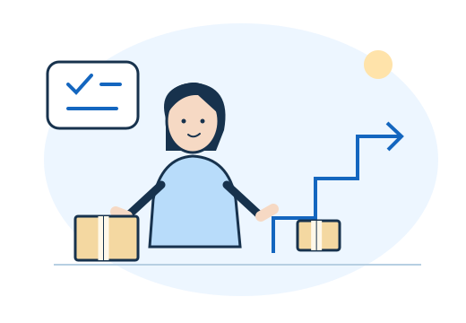
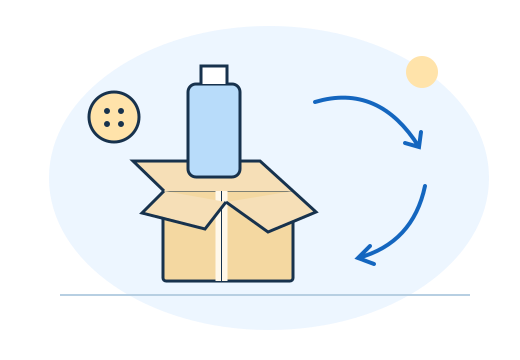

DESIGN REVIEW / 2026.10
読むだけで終わらない。
小さな一歩につながる特典。
白と青を基調に、イラスト・具体例・実践欄を組み合わせた新しいデザインです。
まずは②をご覧ください。3本とも内容とPDFを確認できます。
GUIDE 01
メルカリ5大クレーム対応集
公式手順に合わせて更新。6つの返信例文をコピーできます。
この特典を読む →GUIDE 02

焦らず、稼ぐ土台をつくる
料理と出品の例で、実践から効率化までの順番を図解。
この特典を読む →GUIDE 03

捨てる前に見直す12のもの
使い道・需要・残る金額を確認。実践につながる候補集。
この特典を読む →このページは確認用です。既存の配布ページと特典一覧は、デザイン確定後に更新します。